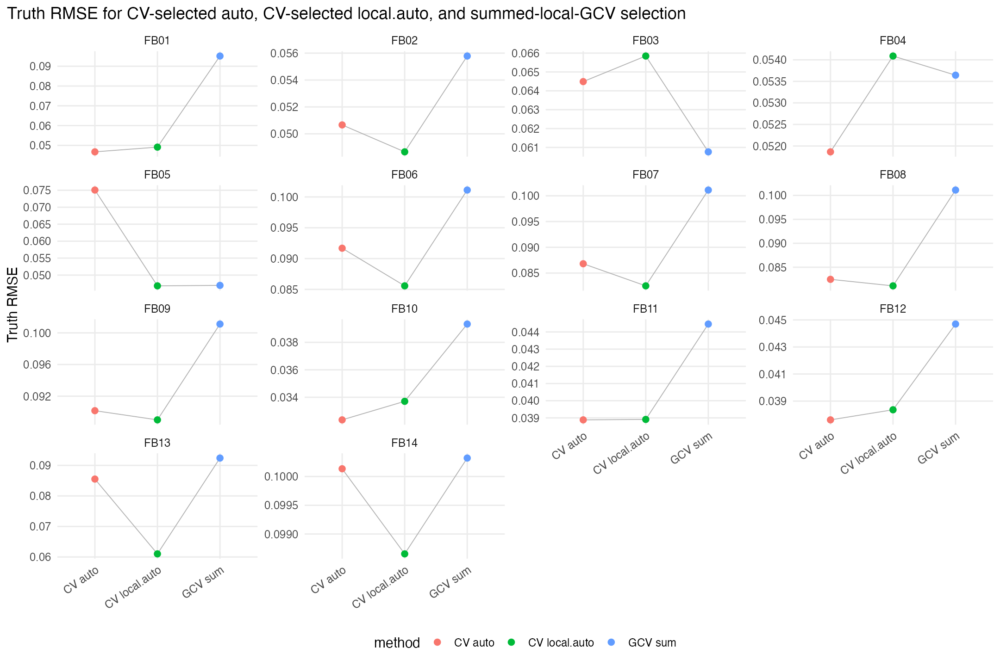
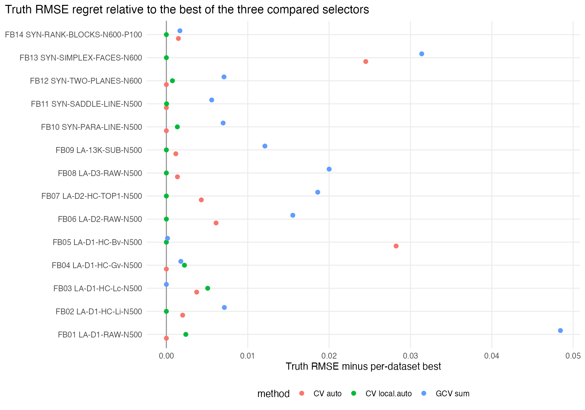
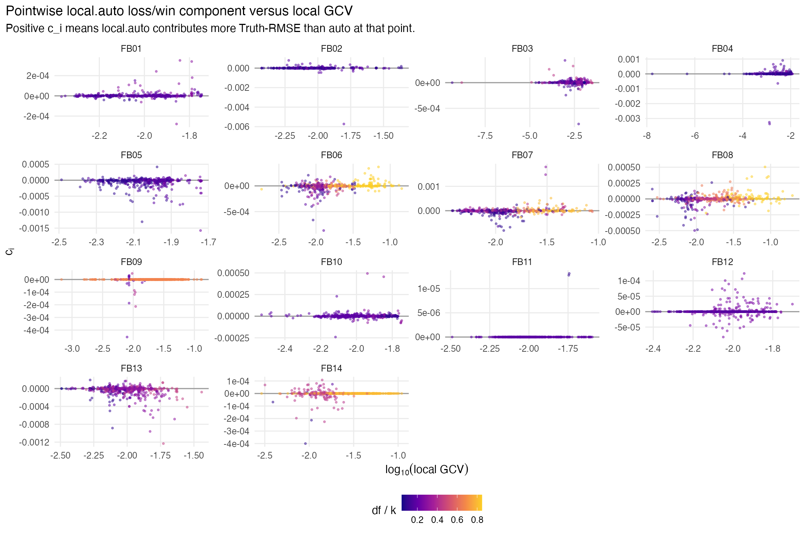
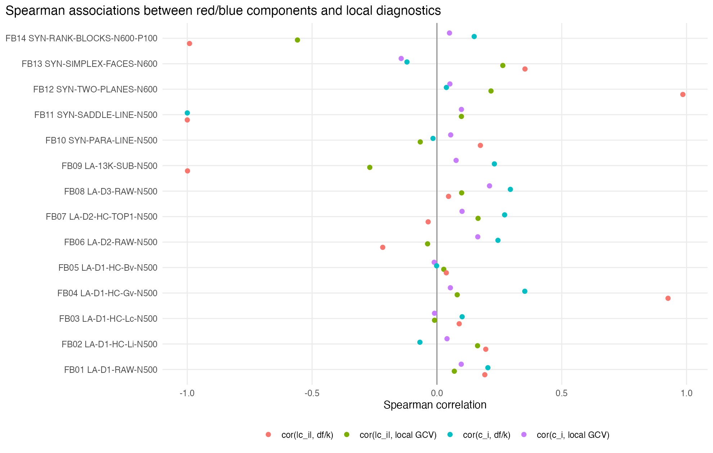

This report implements the first local-GCV experiment on the frozen first-batch non-manifold LPS datasets. For every dataset and every candidate combination of support size k, kernel, degree, and fixed global chart dimension d, it computes the summed local generalized cross-validation score.
Here
\theta=(k,kernel,degree,d)
, RSS is the weighted residual sum of squares for the local weighted
polynomial fit at anchor i, and df is the local weighted-design rank.
The candidate selected by the smallest summed local GCV is compared
with the existing CV-selected
chart.dim = "auto"
and
chart.dim = "local.auto"
fits.
Across 14 datasets, summed local GCV was the best of the three compared selectors in 1 datasets. Its median Truth-RMSE regret relative to the best of {CV auto, CV local.auto, GCV sum} was 0.0071055.

Truth RMSE for the three selectors. Gray lines connect methods within the same dataset; lower is better. The GCV selector uses no CV folds for selection, but its selected candidate is then refit through the standard LPS path to report Truth RMSE, Observed RMSE, and the usual CV RMSE diagnostic.

Truth-RMSE regret relative to the best of the three compared selectors on each dataset.
The pointwise component \(c_i=((e_i^{la})^2-(e_i^a)^2)/(n(R_{la}+R_a))\) is positive where local.auto contributes more Truth-RMSE than auto. The scatter plot below overlays these components against the local GCV score of the CV-selected local.auto fit, colored by the local degrees-of-freedom ratio df/k.

If red regions were simply high-local-risk or high-complexity regions, positive c_i values would tend to occur at high local GCV or high df/k.

Spearman correlations summarize whether the pointwise local.auto loss/win components are monotone-associated with local GCV or with the local degrees-of-freedom ratio.
| diagnostic | median_spearman |
|---|---|
| cor(|c_i|, df/k) | 0.06787 |
| cor(|c_i|, local GCV) | 0.07546 |
| cor(c_i, df/k) | 0.1251 |
| cor(c_i, local GCV) | 0.05451 |
| batch_id | dataset_id | support.size | kernel | degree | chart.dim | sum.local.gcv | fallback.rate | mean.df.ratio | truth_rmse |
|---|---|---|---|---|---|---|---|---|---|
| FB01 | LA-D1-RAW-N500 | 16 | tricube | 2 | 4 | 0.73666 | 0 | 0.5366 | 0.095159 |
| FB02 | LA-D1-HC-Li-N500 | 35 | tricube | 2 | 2 | 2.3261 | 0 | 0.1519 | 0.055785 |
| FB03 | LA-D1-HC-Lc-N500 | 35 | tricube | 2 | 2 | 2.1268 | 0 | 0.1486 | 0.060765 |
| FB04 | LA-D1-HC-Gv-N500 | 32 | tricube | 2 | 1 | 2.3928 | 0 | 0.0915 | 0.053643 |
| FB05 | LA-D1-HC-Bv-N500 | 34 | tricube | 2 | 1 | 2.2201 | 0 | 0.08818 | 0.046969 |
| FB06 | LA-D2-RAW-N500 | 22 | tricube | 2 | 5 | 0.0000091856 | 0 | 0.932 | 0.10112 |
| FB07 | LA-D2-HC-TOP1-N500 | 16 | tricube | 2 | 4 | 0.0021683 | 0 | 0.8174 | 0.10112 |
| FB08 | LA-D3-RAW-N500 | 29 | tricube | 2 | 6 | 0.0000015394 | 0 | 0.9252 | 0.10112 |
| FB09 | LA-13K-SUB-N500 | 29 | tricube | 2 | 6 | 0.0000000038417 | 0 | 0.9639 | 0.10112 |
| FB10 | SYN-PARA-LINE-N500 | 35 | tricube | 2 | 2 | 2.5021 | 0 | 0.1642 | 0.039332 |
| FB11 | SYN-SADDLE-LINE-N500 | 35 | tricube | 2 | 2 | 2.4663 | 0 | 0.1714 | 0.044459 |
| FB12 | SYN-TWO-PLANES-N600 | 35 | tricube | 2 | 2 | 2.5655 | 0 | 0.1714 | 0.044694 |
| FB13 | SYN-SIMPLEX-FACES-N600 | 22 | tricube | 2 | 5 | 1.2163 | 0 | 0.502 | 0.092398 |
| FB14 | SYN-RANK-BLOCKS-N600-P100 | 16 | tricube | 2 | 4 | 0.0000000000000018218 | 0 | 0.9375 | 0.10032 |